대한민국 최고의 Shot Blast 전문제작업체, 한국브라스트(주). 국내 표면처리 시장을 이끌어 가는 기업입니다.
Automated Surface Solutions
ROBOT BLASTER
로봇과 블라스팅 기술을 결합한 자동 표면처리 시스템으로, 복잡한 형상도 정밀하고 균일하게 처리합니다.
Global Leading Company
세계 최고 수준의 샌드 블라스팅 전문기업
반도체·디스플레이부터 중공업까지, 표면처리의 모든 영역에서 최적의 솔루션을 제공합니다.
Total Air Sand Blast Service
장비 설계부터 A/S까지 원스톱 솔루션
설계·제작·설치·사후관리까지, 표면처리 장비 도입의 모든 과정을 함께합니다.
Total Air Sand Blast Service
현장 맞춤형 표면처리 장비
다양한 산업 현장의 요구에 맞춘 맞춤형 표면처리 장비를 설계·공급합니다.
Total Air Sand Blast Service
축적된 기술력, 신속한 A/S
1997년 창립 이래 쌓아온 기술력과 전국 단위 A/S 인프라로 고객과 함께 성장합니다.
사업영역
BLAST의 핵심 기술 및 주력 사업 분야를 소개합니다.
초정밀 제어 기술
미세한 오차도 허용하지 않는 반도체 및 전자 부품 전용 마이크로 피닝·샌딩 시스템
고효율 자동화 공정
스마트 팩토리 연동형 컨베어 및 인덱스 장비로 생산 극대화 및 원가 절감 실현
철저한 기술 지원 & A/S
전국 단위 신속 대응 인프라와 정품 소모품 상시 공급으로 무중단 가동 보장
Global Network
세계로 뻗어나가는 BLAST 글로벌 납품 현황
국내를 넘어 글로벌 첨단 제조 현장까지, 최고의 표면처리 솔루션을 안정적으로 공급하고 있습니다.
[ 글로벌 네트워크 및 해외 법인 납품 거점 지도 영역 ]
고객지원
공지사항 및 다양한 고객 소통 창구를 확인하세요.
공지사항
시화 MTV 신축공장 준공 안내2017-07
빠른 고객센터
장비 도입 및 맞춤형 견적 상담을 지원해 드립니다.상담접수
HOME>회사소개
고객 여러분 안녕하십니까?
저희 한국브라스트 홈페이지 방문을 환영합니다.
한국브라스트는 축적된 기술력과 A/S 정신을 바탕으로 국내 표면처리 시장에 리더 위치를 확보해 왔습니다. 보다 우수한 성능의 제품을 개발해 냄으로써 글로벌 세계 시장을 석권하기 위함은 물론, 더 나아가 인류의 보다 나은 삶을 위해 기여하는 건실한 기업이 되기 위한 최선의 노력을 다할 것입니다.
저희 한국브라스트는 표면처리 장비 전문 생산 업체이며, 다년간의 기술력을 바탕으로 Shot Line 자동화, Sand Blast Line 자동화, 초고압 Water Jet, Deburring Machine, Blast Burr 제거기, Peening Machine 등 건식(Dry Type) 및 습식(Wet Type) Sand Blast 장비를 전문적으로 생산하는 업체로서 항상 창조적 신기술 개발을 위해 노력하고 있습니다.
또한 다변화하는 세계의 기술력을 충족시키기 위해 당사는 최고의 기술력을 결집시켜 Blast 장비를 제작하는데 최선을 다할 것을 약속드립니다.
한국브라스트(주) 대표이사 이 현 호
회사개요
회사명
한국브라스트(주)
대표이사
이 현 호
설립일
1997년 12월 01일
사업장 소재지
본사 및 공장 : 경기도 시흥시 엠티브이28로 11 (정왕동 시화 MTV 1사 907호)
대표전화
031-488-8390~1
FAX
031-488-8392
이메일
blast@koreablast.com
사업자번호
134-86-02305
종업원수
50인 미만
사업내용
Air Blast, Shot Blast, Peening Machine, Sanding Room, Acoustical Spray Room, Dust Collector & Filter, Blasting(Sanding) 소모품, 각종 연마재 수입 판매, 임가공 사업
회사연혁
2017
시화 MTV 신축공장 준공식 (7월)
신규 집진기 및 수출용 장비 개발
장비 개발 연구소 개소
2016
시화 MTV 신축공장 기공식 (11월)
YG-1 초경 절삭 공구류 표면처리 장비 개발 공급
한전원자력연료 지르코늄 튜브 제조용 장비 공급완료
2014~15
삼성전자(베트남) Metal Blasting 장비 130대 수주 및 공급완료 (휴대폰 외면 표면처리)
플라스틱 사출물 Burr 및 Parting Line 제거장치 개발성공
한전원자력연료 지르코늄 튜브 제조용 플러쉬피클러, 산세 설비 제작 수주
녹색기술 인증 (미래창조과학부장관)
제52회 천만불 수출의탑 수여
2012~13
서한NTN베어링 Ø6000 풍력 발전기 베어링 & 코팅장비 납품, 신소재 생산기업 등록
삼성전자 휴대폰 플라스틱 사출물 Continuous Deburring/Buffing M/C 개발성공
2010~11
첨단제품 생산기업 등록 (여과기, 집진기)
품질경영시스템·환경경영시스템 인증기업
한전원자력연료 국내최초 해외수출장비(중국) 수주 및 납품
2008~09
연구개발전담부서 설립
유럽 CE 인증 3건 실시
2006~07
이노비즈인증기업 (중소기업청장)
기술혁신개발사업 (주관: 중소기업청)
2004~05
Dry Ice / Ice Cleaning M/C 개발
벤처기업 등록 (중소기업청)
2002~03
국가산업단지 시화공단 공장준공
한국브라스트(주) 법인 전환
청정산업 개발업체 선정 (산업자원부)
1997~01
1997년 창립
반도체 Lead Frame Deburring M/C 개발
ISO 9001, 14001 환경인증 획득 (국제인증센터)
연구실적
한국브라스트는 창립 이후 표면처리 장비 분야에서 꾸준한 연구개발을 이어와 다수의 특허 및 실용신안, 디자인 등록을 보유하고 있습니다.
19
특허 등록
7
실용신안
5
디자인 등록
브라스트머신을 이용한 피가공물의 증착물 제거방법 (특허 제10-1589818호)
실린더 라이너 외면 가공기 (특허 제10-1533509호)
플라스틱 사출물 Burr 및 단차 제거장치 (특허 제10-1449242호)
모바일 메탈 프레임 브라스트 가공장치 (특허 제10-1613377호)
산세액 누출방지 핵연료봉용 클래딩 튜브 산세처리 장치 (특허 제10-1333151호)
국책·산학 연구개발 과제
과제명
연구기간
주관기관
성공여부
산학협동형중소기업인력양성지원사업 과제명 : 고기능 에어로 폴리싱 시스템개발
2011.02.01 ~ 2011.10.31
한국산업기술대학교
개발완료
생산환경 혁신 기술개발 사업 과제명 : 세라믹 고정밀 가공장비 개발
2008.09.01 ~ 2009.08.30
한국생산성본부
개발완료
Mechanical Descaling Simulator 개발
2008.01.09 ~ 2008.03.28
(주)포스코
개발완료
기술혁신 개발사업 과제명 : 친환경 정밀 유리 가공기 개발
2007.07.01 ~ 2008.06.30
중소기업청
개발완료
산.학.연 공동기술개발 사업 과제명 : 샌드 브라스트용 분사제어 밸브 개발
2007.07.01 ~ 2007.12.31
중소기업청
개발완료
자동 및 수동 튜브 내면 연마설비 개발 과제명 : 지르코늄 튜브 내면 연마 설비 개발
2006.08.29 ~ 2007.06.29
한전원자력
개발완료
플러쉬 피클러 설비 개발 과제명 : 지르코늄 튜브 내면 세척 장비 개발
2006.05.22 ~ 2007.02.01
한전원자력
개발완료
기술혁신 개발사업 과제명 : 셀 가공용 고정도 브라스트 장비 개발
2005.07.01 ~ 2006.04.30
중소기업청
개발완료
산.학.연 공동기술개발 사업 과제명 : 쇼트브라스트기의 경량형 임펄러 개발
2003.05.01 ~ 2004.02.28
중소기업청
개발완료
청정생산 기술사업 과제명 : 환경 친화적 금속표면처리를 위한 Snow Ice Cleaning System
2002.04.01 ~ 2004.03.31
산업자원부
개발완료
Development of Water Jet Peening Machine 개발
2001.12.15 ~ 2002.06.15
경기공업대학교
개발완료
인증현황
국내외 공인기관으로부터 아래와 같은 품질·기술 인증을 획득하여 신뢰할 수 있는 기술력을 증명하고 있습니다.
ISO 9001 / ISO 14001 품질경영·환경경영시스템 인증 (ICR)
기술혁신형 중소기업 (INNO-BIZ) 중소기업청장 인증
벤처기업 확인 기술보증기금
연구개발전담부서 인정 한국산업기술진흥회장
녹색기술 인증 미래창조과학부장관
CLEAN 사업장 인정 노동부장관
한국무역협회 회원 회원번호 300185036
유럽 CE 인증 3건 취득
조직도
찾아오시는 길
지도 영역 (네이버/카카오맵 연동)
주소
경기도 시흥시 엠티브이28로 11 (정왕동 시화 MTV 1사 907호)
대표전화
031-488-8390~1
FAX
031-488-8392
HOME>제품소개
My-Series
범용 최고사양·최저가격을 지향하는 국내 최다 판매 표준형 흡입식 샌딩기 라인업입니다.
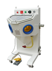
myart
MY-ART
MY-ART 모델로, 유리 아크릴 에칭작업(와인병, 크리스탈, 타일, 대리석 등) 등에 사용됩니다.
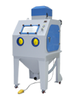
myblast100
MY-BLAST100
MY-BLAST100 사양의 장비입니다.
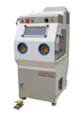
myblast300
MY-BLAST300
MY-BLAST300 모델로, 유리 아크릴 에칭작업(와인병, 크리스탈, 타일, 대리석 등) 등에 사용됩니다.
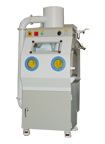
myblast400
MY-BLAST400
MY-BLAST400 모델로, 유리 아크릴 에칭작업(와인병, 크리스탈, 타일, 대리석 등) 등에 사용됩니다.
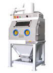
myblast500
MY-BLAST500
MY-BLAST500 모델로, 유리 아크릴 에칭작업(와인병, 크리스탈, 타일, 대리석 등) 등에 사용됩니다.
myblast600
MY-BLAST600
MY-BLAST600 모델로, 유리 아크릴 에칭작업(와인병, 크리스탈, 타일, 대리석 등) 등에 사용됩니다.
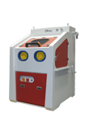
myblast_s
MY-BLAST_S
MY-BLAST_S 사양의 장비입니다.
흡입식 수동 장비
사이클론 집진 일체형 구조의 범용 캐비닛형 흡입식 샌딩기 라인업입니다.
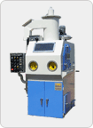
cabinet1
CABINET-1
CABINET-1 모델로, 유리 아크릴 에칭작업(와인병, 크리스탈, 타일, 대리석 등) 등에 사용됩니다.
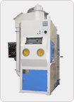
cabinet2
CABINET-2
CABINET-2 모델로, 유리 아크릴 에칭작업(와인병, 크리스탈, 타일, 대리석 등) 등에 사용됩니다.
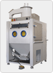
cabinet3
CABINET-3
CABINET-3 모델로, 유리 아크릴 에칭작업(와인병, 크리스탈, 타일, 대리석 등) 등에 사용됩니다.
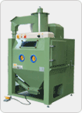
cabinet4
CABINET-4
CABINET-4 모델로, 유리 아크릴 에칭작업(와인병, 크리스탈, 타일, 대리석 등) 등에 사용됩니다.
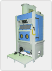
cabinet5
CABINET-5
CABINET-5 모델로, 유리 아크릴 에칭작업(와인병, 크리스탈, 타일, 대리석 등) 등에 사용됩니다.
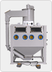
doubles1
DOUBLE-S1
DOUBLE-S1 모델로, 유리 아크릴 에칭작업(와인병, 크리스탈, 타일, 대리석 등) 등에 사용됩니다.
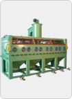
doublemt1
DOUBLE-MT1
DOUBLE-MT1 모델로, 유리 아크릴 에칭작업(와인병, 크리스탈, 타일, 대리석 등) 등에 사용됩니다.
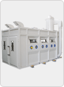
doublemt2
DOUBLE-MT2
DOUBLE-MT2 모델로, 유리 아크릴 에칭작업(와인병, 크리스탈, 타일, 대리석 등) 등에 사용됩니다.
대차장비 (수동/자동)
중량물·대형 제품을 대차에 실어 처리하는 흡입식 장비로, 수동형과 자동형을 함께 운영합니다.
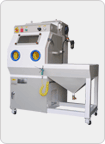
myblast300t
MY-BLAST300-T
MY-BLAST300-T 모델로, 유리 아크릴 에칭작업 (와인병, 크리스탈, 타일, 대리석 등) 등에 사용됩니다.
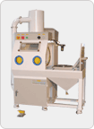
myblast400t
MY-BLAST400-T
MY-BLAST400-T 모델로, 유리 아크릴 에칭작업 (와인병, 크리스탈, 타일, 대리석 등) 등에 사용됩니다.
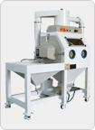
myblast500t
MY-BLAST500-T
MY-BLAST500-T 모델로, 유리 아크릴 에칭작업 (와인병, 크리스탈, 타일, 대리석 등) 등에 사용됩니다.
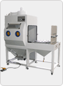
myblast600t
MY-BLAST600-T
MY-BLAST600-T 모델로, 유리 아크릴 에칭작업 (와인병, 크리스탈, 타일, 대리석 등) 등에 사용됩니다.
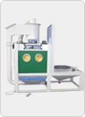
mstb1200t
MSTB-1200-T
MSTB-1200-T 모델로, 고무 금형 일체 처리가능 등에 사용됩니다.
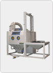
mstb1400t
MSTB-1400-T
MSTB-1400-T 모델로, 고무 금형 일체 처리가능 등에 사용됩니다.
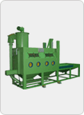
mstbts1
MSTB-T-S1
MSTB-T-S1 모델로, 고무 금형 일체 처리가능 등에 사용됩니다.
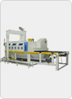
mstbts2
MSTB-T-S2
MSTB-T-S2 모델로, 열처리 스케일 제거 및 녹 제거 등에 사용됩니다.
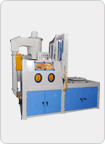
astbs1
ASTB-S1
ASTB-S1 사양의 장비입니다.
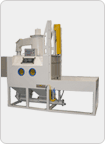
astbs2
ASTB-S2
ASTB-S2 사양의 장비입니다.
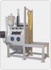
astbs3
ASTB-S3
ASTB-S3 사양의 장비입니다.
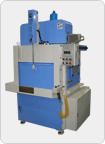
astbs4
ASTB-S4
ASTB-S4 사양의 장비입니다.
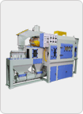
astbs5
ASTB-S5
ASTB-S5 사양의 장비입니다.
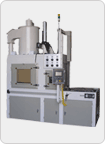
astbs6
ASTB-S6
ASTB-S6 사양의 장비입니다.
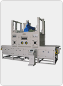
astbs7
ASTB-S7
ASTB-S7 사양의 장비입니다.
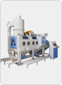
astbs8
ASTB-S8
ASTB-S8 사양의 장비입니다.
astbs9
ASTB-S9
ASTB-S9 사양의 장비입니다.
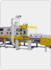
astbs10
ASTB-S10
ASTB-S10 사양의 장비입니다.
컨베어 흡입식 장비
국내 표준형 컨베어 흡입식 샌딩기 라인업으로, 연속 라인 생산에 최적화되었습니다.
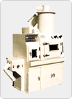
ConveyorLF100
Conveyor LF100
Conveyor LF100 사양의 장비입니다.
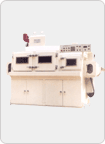
ConveyorLF400
Conveyor LF400
Conveyor LF400 사양의 장비입니다.
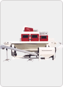
ConveyorIM400
Conveyor IM400
Conveyor IM400 모델로, PPS 재질의 DE-BURRING 등에 사용됩니다.
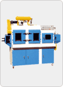
ReelBlast85
Reel Blast 85
Reel Blast 85 모델로, 반도체 박판 PLATE 등에 사용됩니다.
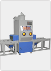
ACTB-MINI
ACTB-MINI
ACTB-MINI 모델로, 알루미늄 & 마그네슘 핸드폰 케이스 표면처리 등에 사용됩니다.
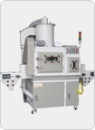
ACTB-200
ACTB-200
ACTB-200 모델로, 알루미늄 & 마그네슘 핸드폰 케이스 표면처리 등에 사용됩니다.
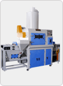
ACTB-300
ACTB-300
ACTB-300 모델로, 알루미늄 & 마그네슘 핸드폰 케이스 표면처리 등에 사용됩니다.
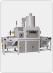
ACTB-400
ACTB-400
ACTB-400 모델로, 알루미늄 & 마그네슘 핸드폰 케이스 표면처리 등에 사용됩니다.
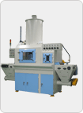
ACTB-500
ACTB-500
ACTB-500 모델로, 알루미늄 & 마그네슘 핸드폰 케이스 표면처리 등에 사용됩니다.
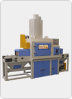
ACTB-600
ACTB-600
ACTB-600 모델로, 알루미늄 & 마그네슘 핸드폰 케이스 표면처리 등에 사용됩니다.
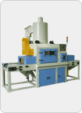
ACTB-700
ACTB-700
ACTB-700 모델로, 알루미늄 & 마그네슘 핸드폰 케이스 표면처리 등에 사용됩니다.
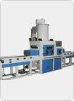
ACTB-800
ACTB-800
ACTB-800 모델로, 알루미늄 & 마그네슘 핸드폰 케이스 표면처리 등에 사용됩니다.
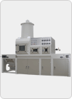
ACTB-900
ACTB-900
ACTB-900 모델로, 알루미늄 & 마그네슘 핸드폰 케이스 표면처리 등에 사용됩니다.
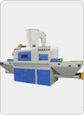
ACTB-1000
ACTB-1000
ACTB-1000 모델로, 알루미늄 & 마그네슘 핸드폰 케이스 표면처리 등에 사용됩니다.
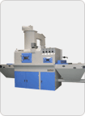
ACTB-1000-S
ACTB-1000-S
ACTB-1000-S 모델로, 알루미늄 & 마그네슘 핸드폰 케이스 표면처리 등에 사용됩니다.
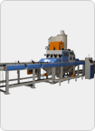
ACTB-1050-S
ACTB-1050-S
ACTB-1050-S 모델로, ITO Target 제품 재생 등에 사용됩니다.
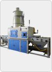
ACTB-200-D
ACTB-200-D
ACTB-200-D 모델로, 석영제품 스케일 제거 등에 사용됩니다.
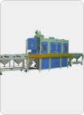
ACTB-450-S
ACTB-450-S
ACTB-450-S 모델로, ITO Target 제품 재생 등에 사용됩니다.
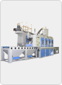
ACTB-1150-S
ACTB-1150-S
ACTB-1150-S 모델로, ITO Target 제품 재생 등에 사용됩니다.
ACTB-1250-S
ACTB-1250-S
ACTB-1250-S 모델로, 헤어라인 광판 표면처리 등에 사용됩니다.
ACTB-CTP
ACTB-CTP
ACTB-CTP 모델로, 사출물 버 제거 등에 사용됩니다.
HAN-C200
HAN-C200
HAN-C200 모델로, PLATE BLASTING 등에 사용됩니다.
인덱스 장비
다중 스핀들 연속 작업이 가능한 인덱스형 샌딩기 라인업입니다.
INDEX-950-M1
INDEX-950-M1
INDEX-950-M1 모델로, 임플란트 및 기타 의료 기구 제품 코팅 전처리 등에 사용됩니다.
INDEX-950-M2
INDEX-950-M2
INDEX-950-M2 모델로, 임플란트 및 기타 의료 기구 제품 코팅 전처리 등에 사용됩니다.
INDEX-850
INDEX-850
INDEX-850 모델로, GEAR HOB BEAD BLAST 전용장비 등에 사용됩니다.
INDEX-950
INDEX-950
INDEX-950 모델로, GEAR HOB BEAD BLAST 전용장비 등에 사용됩니다.
INDEX-950-R
INDEX-950-R
INDEX-950-R 모델로, GEAR HOB BEAD BLAST 전용장비 등에 사용됩니다.
INDEX-1300
INDEX-1300
INDEX-1300 모델로, 플라스틱 사출물 DE-BURRING 등에 사용됩니다.
INDEX-1500
INDEX-1500
INDEX-1500 모델로, 플라스틱 사출물 DE-BURRING 및 이색현상 제거 등에 사용됩니다.
INDEX-1650
INDEX-1650
INDEX-1650 모델로, 자동차 부품 주물 탈사 등에 사용됩니다.
INDEX-1
INDEX-1
INDEX-1 모델로, 소형 BLASTING 제품 등에 사용됩니다.
INDEX-2
INDEX-2
INDEX-2 모델로, 개별 SAND BLASTING 처리에 적합한 제품 등에 사용됩니다.
INDEX-3
INDEX-3
INDEX-3 모델로, 개별 SAND BLASTING 처리에 적합한 제품 등에 사용됩니다.
INDEX-4
INDEX-4
INDEX-4 모델로, 개별 SAND BLASTING 처리에 적합한 제품 등에 사용됩니다.
Han-Index-W
Han-Index-W
Han-Index-W 모델로, PVD 코팅 전처리 등에 사용됩니다.
에프론 장비
엔드리스 벨트 방식으로 소형 부품을 대량 처리하는 에프론 장비 라인업입니다.
APRON-850
APRON-850
APRON-850 모델로, 소형 부품 대량 생산에 적합 등에 사용됩니다.
APRON-1000
APRON-1000
APRON-1000 모델로, 소형 부품 대량 생산에 적합 등에 사용됩니다.
APRON-1200
APRON-1200
APRON-1200 모델로, 소형 부품 대량 생산에 적합 등에 사용됩니다.
APRON-1300
APRON-1300
APRON-1300 모델로, 소형 부품 대량 생산에 적합 등에 사용됩니다.
Han-Apron1200
Han-Apron 1200
Han-Apron 1200 모델로, 열처리 스케일 제거 등에 사용됩니다.
Han-ApronImpeller
Han-Apron Impeller
Han-Apron Impeller 모델로, 열처리 스케일 제거 등에 사용됩니다.
바스켓 장비
소형 다품종 부품을 바스켓에 담아 한번에 처리하는 바스켓 장비 라인업입니다.
BASKET-400B
BASKET-400B
BASKET-400B 모델로, 소형 다품종 제품 샌딩작업 등에 사용됩니다.
BASKET-500B
BASKET-500B
BASKET-500B 모델로, 소형 다품종 제품 샌딩작업 등에 사용됩니다.
BASKET-S850B
BASKET-S850B
BASKET-S850B 모델로, 소형 다품종 제품 샌딩작업 등에 사용됩니다.
BASKET-MB
BASKET-MB
BASKET-MB 모델로, 소형 다품종 제품 샌딩작업 등에 사용됩니다.
직압식 수동 장비
흡입식 대비 3~5배 높은 작업 효율의 직압식 수동 샌딩기 라인업입니다.
simplep1
SIMPLE-P1
SIMPLE-P1 모델로, 초고압 BLASTING 작업 등에 사용됩니다.
mptb1
MPTB-1
MPTB-1 모델로, 초고압 BLASTING 작업 등에 사용됩니다.
mptb2
MPTB-2
MPTB-2 모델로, 초고압 BLASTING 작업 등에 사용됩니다.
mptb3
MPTB-3
MPTB-3 모델로, 초고압 BLASTING 작업 등에 사용됩니다.
mptb4
MPTB-4
MPTB-4 모델로, 초고압 BLASTING 작업 등에 사용됩니다.
mptb5
MPTB-5
MPTB-5 모델로, 초고압 BLASTING 작업 등에 사용됩니다.
mptb2m
MPTB-2M
MPTB-2M 모델로, 초고압 BLASTING 작업 등에 사용됩니다.
mptb2ms
MPTB-2MS
MPTB-2MS 모델로, 초고압 BLASTING 작업 등에 사용됩니다.
직압식 대차 장비
턴테이블이 장착된 직압식 대차형 샌딩기 라인업입니다.
mptb01t
MPTB-01-T
MPTB-01-T 모델로, 초고압 BLASTING 작업 등에 사용됩니다.
mptb02t
MPTB-02-T
MPTB-02-T 모델로, 초고압 BLASTING 작업 등에 사용됩니다.
mptb03t
MPTB-03-T
MPTB-03-T 모델로, 초고압 BLASTING 작업 등에 사용됩니다.
mptb04t
MPTB-04-T
MPTB-04-T 모델로, 초고압 BLASTING 작업 등에 사용됩니다.
mptb05t
MPTB-05-T
MPTB-05-T 모델로, 초고압 BLASTING 작업 등에 사용됩니다.
mptbts1
MPTB-T-S1
MPTB-T-S1 모델로, 초고압 BLASTING 작업 등에 사용됩니다.
mptbts2
MPTB-T-S2
MPTB-T-S2 모델로, 초고압 BLASTING 작업 등에 사용됩니다.
mptbts3
MPTB-T-S3
MPTB-T-S3 모델로, 초고압 BLASTING 작업 등에 사용됩니다.
mptbts4
MPTB-T-S4
MPTB-T-S4 모델로, 초고압 BLASTING 작업 등에 사용됩니다.
mptbts5
MPTB-T-S5
MPTB-T-S5 모델로, 초고압 BLASTING 작업 등에 사용됩니다.
컨베어 직압식 장비
더블 블라스트 탱크 구조의 컨베어 직압식 장비 라인업입니다.
PCTB-M
PCTB-M
PCTB-M 모델로, 흡입식 컨베어로 제거하기 힘든 SCALE 제거 등에 사용됩니다.
PCTB-500-D
PCTB-500-D
PCTB-500-D 모델로, 흡입식 컨베어로 제거하기 힘든 SCALE 제거 등에 사용됩니다.
PCTB-600-D
PCTB-600-D
PCTB-600-D 모델로, 흡입식 컨베어로 제거하기 힘든 SCALE 제거 등에 사용됩니다.
PCTB-800-D
PCTB-800-D
PCTB-800-D 모델로, 흡입식 컨베어로 제거하기 힘든 SCALE 제거 등에 사용됩니다.
이동식 장비 (쇼트탱크)
야외 건설현장에도 투입 가능한 이동식 직압식 쇼트탱크 라인업입니다.
PORTABLE-1
PORTABLE-1
PORTABLE-1 모델로, 석조 조경물의 형상 및 글씨 가공작업 등에 사용됩니다.
PORTABLE-2
PORTABLE-2
PORTABLE-2 모델로, 석조 조경물의 형상 및 글씨 가공작업 등에 사용됩니다.
PORTABLE-PS
PORTABLE-PS
PORTABLE-PS 모델로, 석조 조경물의 형상 및 글씨 가공작업 등에 사용됩니다.
PORTABLE-S
PORTABLE-S
PORTABLE-S 모델로, 조선, 교량건설, 철 구조물의 페인트 제거 및 도장 전 처리 등에 사용됩니다.
쇼트룸
대형·복잡 형상 제품을 위한 주문 제작형 쇼트룸 라인업입니다.
S-ROOM-1
S-ROOM-1
S-ROOM-1 모델로, 대형 제관물 등에 사용됩니다.
S-ROOM-2
S-ROOM-2
S-ROOM-2 모델로, 토목용 거푸집 시멘트 제거 등에 사용됩니다.
S-ROOM-3
S-ROOM-3
S-ROOM-3 모델로, LCD Lower Electrode 샌딩 작업 전용 등에 사용됩니다.
S-ROOM-4
S-ROOM-4
S-ROOM-4 모델로, LCD Lower Electrode 샌딩 작업 전용 등에 사용됩니다.
S-ROOM-5
S-ROOM-5
S-ROOM-5 모델로, 풍력 발전용 베어링, 샤프트 hot 작업 등에 사용됩니다.
S-ROOM-6
S-ROOM-6
S-ROOM-6 모델로, 풍력 발전용 베어링, 샤프트, 플랜지 Shot 작업 등에 사용됩니다.
S-ROOM-7
S-ROOM-7
S-ROOM-7 모델로, 풍력 발전용 베어링 Shot 작업 등에 사용됩니다.
방음룸
소음이 많은 산업 설비 운용 환경을 위한 주문 제작형 방음룸 라인업입니다.
A-ROOM-1
A-ROOM-1
A-ROOM-1 모델로, 용사룸(Thermal Spray Room) 등에 사용됩니다.
A-ROOM-2
A-ROOM-2
A-ROOM-2 모델로, 용사룸(Thermal Spray Room) 등에 사용됩니다.
A-ROOM-3
A-ROOM-3
A-ROOM-3 모델로, 용사룸(Thermal Spray Room) 등에 사용됩니다.
A-ROOM-4
A-ROOM-4
A-ROOM-4 모델로, LCD Lower Electrode 세라믹 코팅 작업 전용 등에 사용됩니다.
A-ROOM-5
A-ROOM-5
A-ROOM-5 모델로, LCD Lower Electrode 세라믹 코팅 작업 전용 등에 사용됩니다.
A-ROOM-6
A-ROOM-6
A-ROOM-6 모델로, 풍력 발전용 베어링, 플랜지 알루미늄 & 아연 코팅 전용장비 등에 사용됩니다.
A-ROOM-7
A-ROOM-7
A-ROOM-7 모델로, 풍력 발전용 샤프트, 플랜지 알루미늄 & 아연 코팅 전용장비 등에 사용됩니다.
A-ROOM-8
A-ROOM-8
A-ROOM-8 모델로, 풍력 발전용 베어링 알루미늄 & 아연 코팅 전용장비 등에 사용됩니다.
Robot Blaster
산업용 로봇과 블라스팅 기술을 결합한 자동 표면처리 시스템 라인업입니다.
RBT-1200-S
RBT-1200-S
RBT-1200-S 모델로, 반도체 부품 세정/ 코팅 전처리, 쿼츠 표면처리, 항공기 바퀴 페인트 제거, 세라믹 판재 표면처리 등에 사용됩니다.
RBT-1350-S
RBT-1350-S
RBT-1350-S 모델로, 반도체 부품 세정/ 코팅 전처리, 쿼츠 표면처리, 항공기 바퀴 페인트 제거, 세라믹 판재 표면처리 등에 사용됩니다.
RBT-1400-S
RBT-1400-S
RBT-1400-S 모델로, 반도체 부품 세정/ 코팅 전처리, 쿼츠 표면처리, 항공기 바퀴 페인트 제거, 세라믹 판재 표면처리 등에 사용됩니다.
RBT-1400-S_twist
RBT-1400-S(Twist Screen)
RBT-1400-S(Twist Screen) 모델로, 반도체 부품 세정/ 코팅 전처리, 쿼츠 표면처리, 항공기 바퀴 페인트 제거, 세라믹 판재 표면처리 등에 사용됩니다.